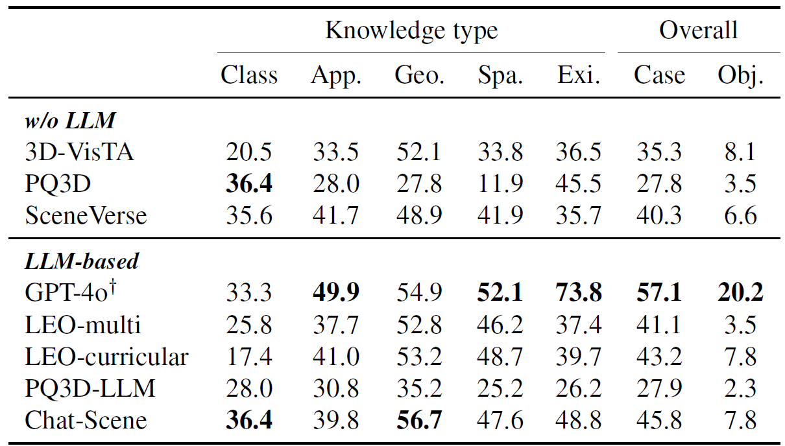
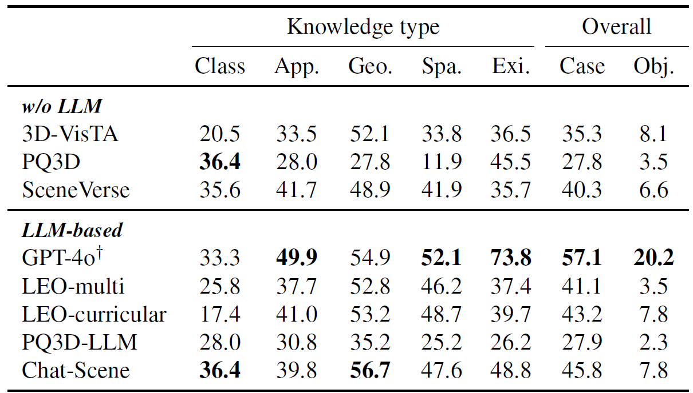

🗃️ Flawed test data. We observe notable data flaws including ambiguous referential texts in the grounding task, ambiguous questions and incomplete answers in the QA task. Such flawed test data could undermine the reliability of evaluation results.

🗃️ Beacon3D: high-quality test data. We establish detailed annotation guidelines, ensuring precise and natural language to address prior data flaws. The human study across different 3D-VL benchmarks highlights the quality of Beacon3D test data.
📊 Insufficient evaluation metrics. We find that simple metrics, such as averaging accuracy over individual QA pairs, are vulnerable to pitfalls like visual ignorance and weak language robustness, falling short in capturing true model capability.

📊 Beacon3D: object-centric evaluation metrics. In contrast to previous per-case average metrics, we design three diverse test cases per object and adopt object-centric metrics, which require the model to make correct predictions in all three cases.
🔗 Beacon3D: Grounding Chain. We organize the grounding data into Grounding Chains following a coarse-to-fine scheme, which helps assess performance coherence across different granularities and identify the boundary of grounding capability.
Select a scene and then click an image to visualize scene and object-centric data
Question
Answer
Metrics. Object-centric metrics elicit a significant performance drop compared to per-case metrics, suggesting that current 3D-VL models lack a comprehensive understanding of objects and are susceptible to language variations.
 

Chain analysis: GQA-Chain. We visualize four types of GQA-Chains and observe a limited proportion of good grounding-QA coherence. R1 and R2 measure the two types of broken coherence, both hovering around 50%. This reveals a substantial gap between the skills of grounding and QA, and frequent shortcut behavior in QA.
Model insights. Our evaluation indicates that incorporating LLMs into 3D-VL models weakens grounding capability and does not fundamentally enhance QA capability. This suggests the main bottleneck lies in 3D perception and VL alignment, rather than language modeling or reasoning — LLMs' strength. Therefore, advancing 3D-VL models may rely more on stronger foundation models for 3D scene understanding than on leveraging LLMs.
If you find our work helpful, please consider citing us:
@inproceedings{huang2025unveiling,
title={Unveiling the Mist over 3D Vision-Language Understanding: Object-centric Evaluation with Chain-of-Analysis},
author={Huang, Jiangyong and Jia, Baoxiong and Wang, Yan and Zhu, Ziyu and Linghu, Xiongkun and Li, Qing and Zhu, Song-Chun and Huang, Siyuan},
booktitle={Proceedings of the IEEE/CVF Conference on Computer Vision and Pattern Recognition (CVPR)},
year={2025}
}